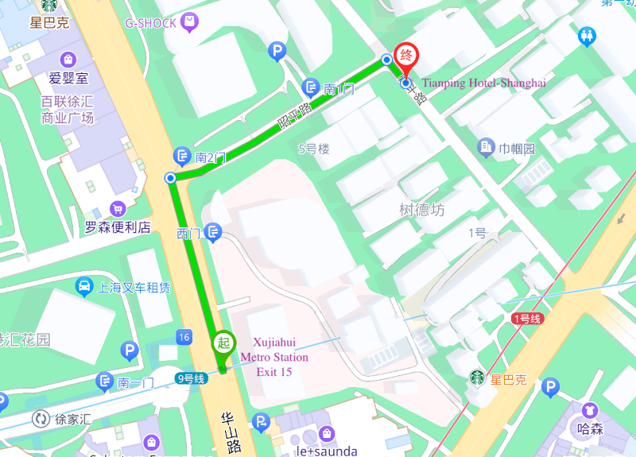

Venue
The workshop takes place in Engineering Building (工程馆), Xuhui Campus, SJTU

Accomodation
The accommodation is provided at Tianping Hotel-Shanghai
天平宾馆 上海市徐汇区天平路185号

Coming from Airport
-
- Taxi: About 200-250 RMB. 50 min out of peak time (7:00-9:30, 16:30-18:30) otherwise can be 80-100 min. At the exit show the taxi driver the address of the hotel
-
天平宾馆 上海市徐汇区天平路185号
-
Underground: 4 RMB and takes about 85 min plus 5 min walk.
- Line 2 until Century Avenue Station change to line 9
- Line 9 until Xujiahui Station, large station, follow exit door 15.
- Walk North along Huashan Road (50 meters) until the crossing with Zhaoping Road.
- Turn east along Zhaoping Road (100 meters) until the next crossroad with Tianping Road
- The hotel is at the corner.
Any metro line 1, 9, or 11 arrive at the Xujiahui station.
Internet
- Roaming: with your foreign sim card it will work normally, might be expensive.
- Get a sim card at arrival: several shops at the airport, access to local internet (google service and Co. are not accessible)
- Wifi: Wifi is present almost everywhere (also local internet)
It is strongly recommended to get in one way or another internet on the phone for moving around and paying.
Payment
Payment in China is nowadays almost exclusively contactless and with mobile. It is extremely convenient, however, it means that alternative payment methods are less widespread.
-
Mobile Payment: Very easy to register and use.
- Download Allipay or Wechat from the app store.
- Register with your phone number
- Add Bank card
The overall help can be found here.
From there you can pay anywhere by showing or scanning a QR code. You also have access to underground, taxi service, food and grocery delivery, bicycles all within the app.
-
Credit card: VISA, MASTER, Union Pay all work. Not all shops accept the mode of payment.
- Cash: Though accepted in most shops and taxi, it is very difficult to pay with cash presently (often no change).
Warning
Since your wallet is your phone, you need internet connection (roaming or local sim) as well as enough power for your phone. Carry your charger around, or borrow almost everywhere (2-3 RMB) a charger that you bring back in the box after charging.
Moving Around
- Underground Very good and easy. You can use the app (transport icon) to pay by showing a QR code or purchase a metro card at the station.
- Taxi/Riding companies: Taxi and ride hailing (didi) can be ordered through the app. Input the destination address, it will pay from your app.
- Bicycles: renting bike is also done by scanning a qr code on the bike. Blue bikes are available through allipay while yellow are through wechat. Present everywhere, just pay attention to park the bike in locations that are indicated for.
Food
Restaurants are plentiful and diverse. Ordering food in restaurant is often done via app (scan a qr code on the table). Even if the menu might be in Chinese, you can see the pictures.